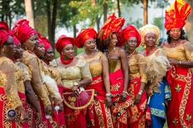
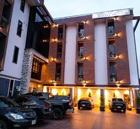
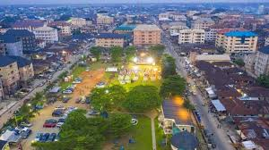
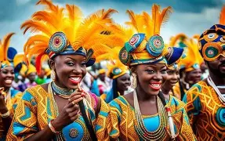
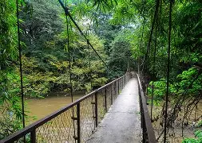
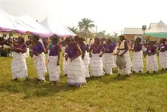
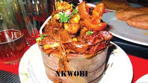
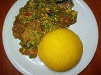

Festivals

Traditional celebrations feature music, dancing, masquerade displays, and cultural performances that bring communities together.





Discover the traditions, values, and creativity that make Aba a unique destination.
Aba is located within Igbo land and reflects many traditional Igbo customs, including respect for elders, community cooperation, and strong entrepreneurial values. The Igbo people are one of the largest ethnic groups in Nigeria, mainly found in the southeastern region. Igbo culture is rich in traditions, values, and community life. Family and respect for elders are highly important, and communities are often organized around extended family systems. Traditional Igbo society values hard work, entrepreneurship, and education. Festivals such as the New Yam Festival celebrate the harvest season and give thanks for a successful farming year. Music, dance, storytelling, and colorful attire play significant roles in cultural celebrations. The Igbo language is widely spoken, and traditional beliefs, customs, and ceremonies continue to influence modern life. Marriage ceremonies, title-taking events, and communal gatherings help preserve cultural heritage and strengthen social bonds. Today, Igbo culture remains a vibrant part of Nigeria's identity, blending traditional customs with contemporary lifestyles while maintaining strong cultural pride and community values.

Traditional celebrations feature music, dancing, masquerade displays, and cultural performances that bring communities together.


Popular dishes include fufu, bitter leaf soup, oha soup, jollof rice, abacha, and nkwobi, offering visitors an authentic taste of the region.
Aba is famous throughout Nigeria for locally produced shoes, bags, clothing, and leather products made by skilled artisans.
Aba is a vibrant commercial city in southeastern Nigeria known for its entrepreneurial spirit and growing urban lifestyle. The city is famous for its busy markets, thriving small-scale industries, and skilled artisans who produce clothing, footwear, and leather products. Many residents are engaged in business, trade, and manufacturing, making Aba one of Nigeria's leading commercial centers. Modern life in Aba combines traditional Igbo values with contemporary living. Residents use mobile technology, social media, and digital banking for communication and business transactions. Shopping centers, restaurants, entertainment venues, and modern transportation services contribute to the city's urban atmosphere. Education is highly valued, with numerous schools and higher institutions serving the population. Despite rapid modernization, community relationships, cultural celebrations, and family ties remain important aspects of daily life. Aba continues to grow as a center of innovation, commerce, and culture, attracting people from different parts of Nigeria and beyond.